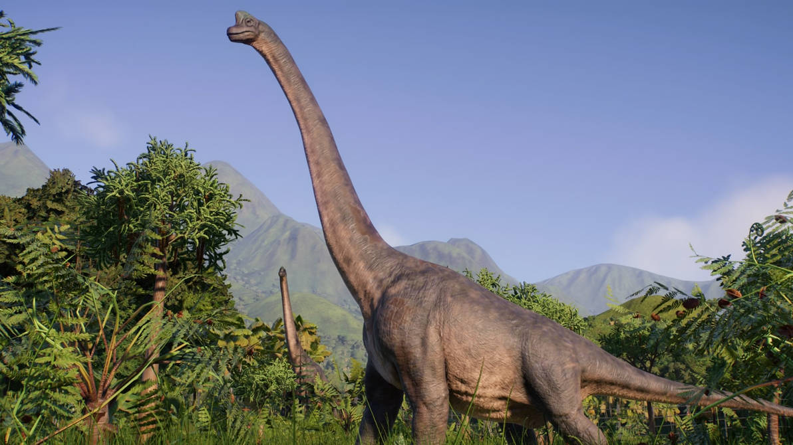

Información
Clado
Titanosauriforme
Periodo
Cretácico Inferior
Encontrado en
Yecla
Peso
+10 toneladas
Descripción
Los titanosauriformes son un clado de dinosaurios saurópodos que vivieron desde el Jurásico medio hasta el Cretácico superior en América, Asia, África, Europa y Oceanía.
Dentro de este grupo se encuentran algunos de los mayores animales terrestres que han existido. Presentaban un cuerpo robusto, cuello largo, cola relativamente corta y miembros delanteros muy desarrollados.